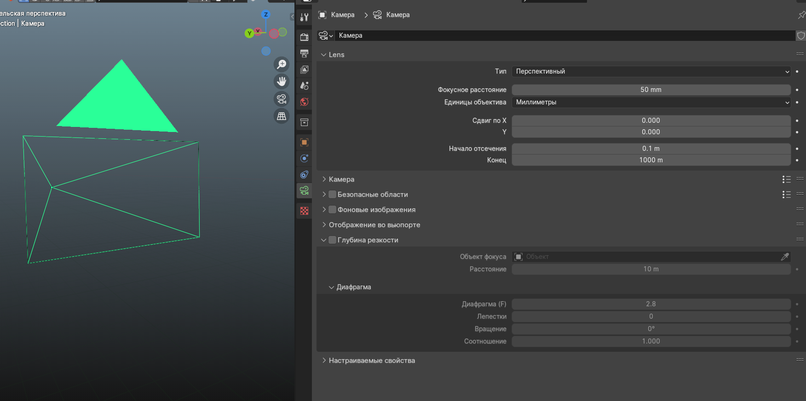
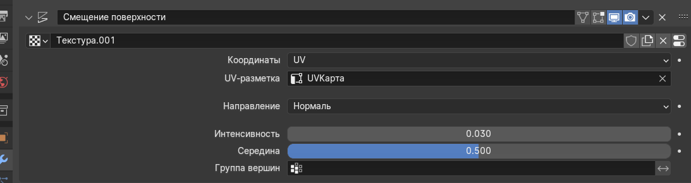
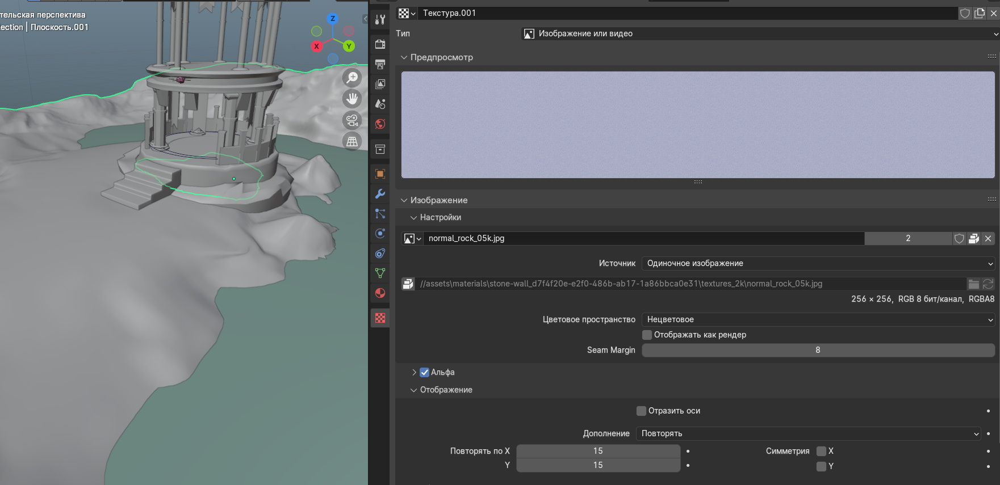
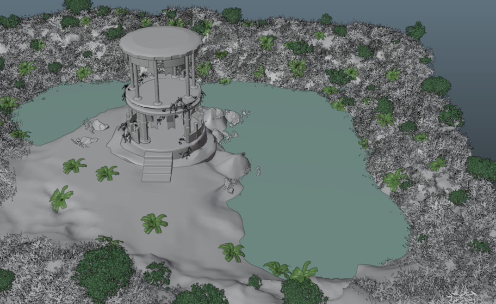
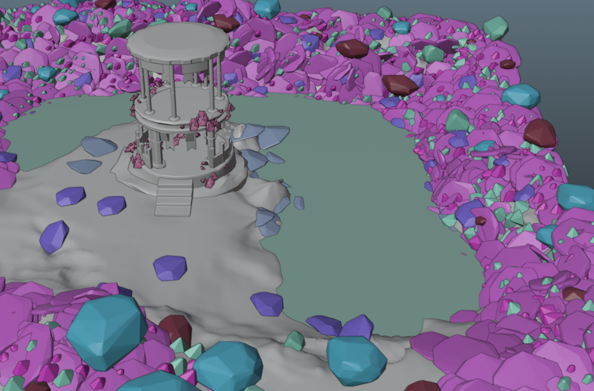
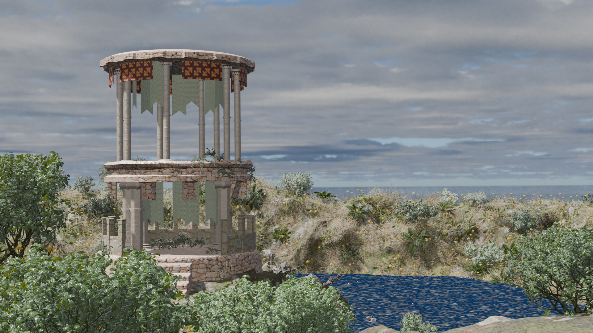

Модель из дня 1, PBR-текстуры с дня 2. На дне 3 вы доводите сцену до финального вида: добавляете растительность, используете BlenderKit, при необходимости делаете бэйк (например, AO/карты глубины/окружения) и финализируете рендер.
Шаги на сегодня
Shift + A→Mesh → Plane— будущая вода. МасштабомSрастяните её над котлованом; поZвыставьте высоту так, чтобы края не «висели» над сушей (чуть ниже берега или вровень — как задумали).- При необходимости подразделите плоскость воды 1–2 раза, чтобы при волне/шейдере не было угловатости (или оставьте одну плоскость до дня 4).
- Проверьте колоннаду: если
Array/Curveещё активны, убедитесь, что масштаб объекта применён (Ctrl + A → Scale) перед финальным «Apply» модификаторов. - Сгруппируйте части башни в коллекцию или сделайте пустышку-родителя — так проще двигать весь ансамбль целиком.
- Растительность и BlenderKit: добавьте растения/листья из библиотек или из BlenderKit, распределите их по берегам и вокруг котлована (не перебарщивайте — оставляйте читаемость формы ротонды).
- Сделайте бэйк при необходимости (например, если вы выпекали AO/карты для ускорения или улучшения качества в финальном рендере).
- Сохраните сцену как
lesson03_final.blend.
Материал воды и шейдинг (по вашим скриншотам)
Вода из BlenderKit обычно строится на комбинации: отражения (Fresnel), IOR, roughness, а также глубина/поглощение и волны через bump/normal или процедурный noise.


Камера

Terrain / plane: модификатор земли


Оптимизация сцены: бэйк и прокси
Когда добавляется много растительности, сцена может начать “тупить” в работе. Обычно помогают прокси/упрощённые версии (чтобы быстро двигать и расставлять объекты) и бэйк (чтобы отрисовка/затенение и эффекты считались заранее, а не каждый раз на лету).


Рендер в Eevee (день 3)
Eevee — быстрый предпросмотр (достаточно, чтобы проверить композицию, воду и распределение растений). Для финала переходите к Cycles на 4-м дне. А режим Workbench помогает “пощупать” сцену ещё до финального предпросчёта.

Опционально
- Если вода выглядит “стеклом” или “пластиком” — поднимите roughness и добавьте/усильте волну через bump/normal, а отражения слегка ослабьте.
- Если сцена слишком темная/плоская — проверьте денойз, экспозицию и силу источников света; иногда помогают точечные правки в материалах воды и растений.